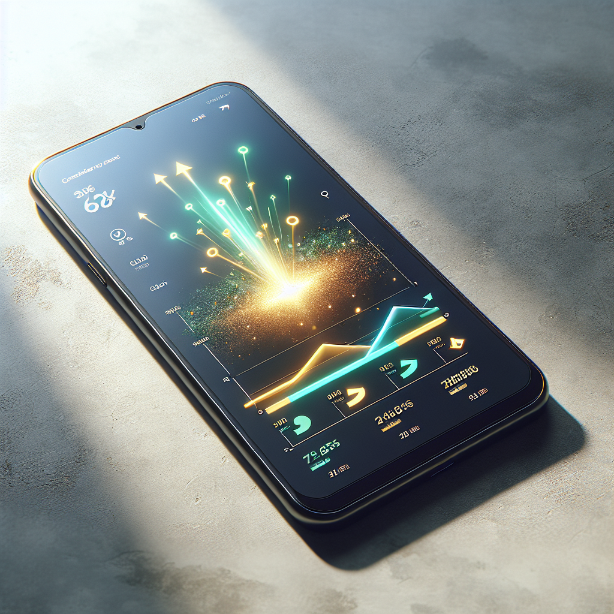

Cosa sono i siti casino non aams con prelievo immediato?
I casino non AAMS con prelievo immediato sono piattaforme di gioco online che operano con licenze internazionali, come quelle rilasciate da Curaçao eGaming o dalla Malta Gaming Authority, invece della tradizionale autorizzazione ADM (ex AAMS) italiana. La caratteristica distintiva di questi operatori stranieri è la capacità di processare i prelievi in tempi estremamente ridotti, che variano da pochi minuti fino a un massimo di 24 ore, a differenza dei 3-5 giorni lavorativi tipici dei bonifici bancari tradizionali.
Questi siti operano legalmente a livello internazionale e accettano giocatori italiani, offrendo un'esperienza di gioco completamente regolamentata ma con normative diverse da quelle italiane. La velocità di pagamento rappresenta il loro principale vantaggio competitivo, insieme a limiti di prelievo più elevati e una maggiore flessibilità nei metodi di pagamento accettati, incluse le criptovalute.
È importante sottolineare che "prelievo immediato" non significa necessariamente istantaneo in senso letterale, ma indica tempi di elaborazione significativamente più rapidi rispetto ai casinò tradizionali. Il tempo effettivo dipende dal metodo di pagamento scelto e dalle procedure di verifica dell'account, ma l'obiettivo rimane quello di garantire ai giocatori l'accesso alle proprie vincite nel minor tempo possibile.
Come valutiamo un casino che paga subito
La selezione di un siti casino non aams affidabile richiede l'analisi di diversi criteri fondamentali che garantiscono sicurezza e rapidità nei pagamenti. Non basta che un operatore prometta prelievi veloci: deve dimostrare concretamente di rispettare gli impegni presi.
Velocità di elaborazione: Un casino davvero efficiente processa le richieste di prelievo entro 24 ore dal momento della richiesta. I migliori operatori completano questa operazione in meno di 6 ore, specialmente per transazioni in criptovaluta o e-wallet. Verificate sempre nelle recensioni dei giocatori i tempi reali di attesa.
Licenza valida e visibile: La presenza di una licenza di gioco internazionale è obbligatoria. Controllate sempre il footer del sito per verificare il numero di licenza e l'autorità emittente. Le licenze più affidabili sono quelle di Curaçao, Malta, Kahnawake e Gibraltar. Un operatore serio mostra questi dati in modo trasparente.
Servizio clienti 24/7: La disponibilità di un supporto continuo tramite chat dal vivo è essenziale per risolvere eventuali problematiche relative ai prelievi. Un servizio clienti efficiente risponde in meno di 2 minuti e può fornire aggiornamenti in tempo reale sullo stato delle transazioni.
Reputazione online verificabile: Le recensioni dei giocatori su forum indipendenti e siti specializzati offrono indicazioni preziose sulla reale affidabilità del casino. Prestate particolare attenzione ai commenti riguardanti i tempi di pagamento e la gestione delle dispute.
I vantaggi dei siti con prelievo immediato rispetto a quelli italiani
La scelta di passare a casino senza licenza ADM comporta vantaggi significativi ma anche alcune responsabilità aggiuntive che il giocatore deve conoscere.
Vantaggi principali
- Transazioni rapide: Il tempo medio di elaborazione si riduce da giorni a ore, con le criptovalute che permettono accrediti quasi istantanei.
- Bonus più generosi: Gli operatori internazionali offrono pacchetti di benvenuto fino al 200% del deposito, contro il 100% massimo dei siti ADM, con requisiti spesso più favorevoli.
- Accettazione di criptovalute: Bitcoin, Ethereum, USDT e altre altcoin sono metodi di pagamento standard, garantendo privacy finanziaria e commissioni ridotte.
- Limiti di puntata flessibili: Assenza delle restrizioni imposte dalla normativa italiana su bet massimi e sessioni di gioco.
- KYC semplificato: Per prelievi di importi contenuti, molti casino non richiedono verifica immediata dell'identità, accelerando ulteriormente il processo.
- Catalogo giochi più ampio: Accesso a provider e titoli non disponibili sui siti con licenza italiana.
Aspetti da considerare
- Nessuna autoesclusione ADM: I sistemi di protezione italiani non si applicano a questi operatori, quindi il giocatore deve gestire autonomamente il gioco responsabile.
- Responsabilità fiscale: Le vincite superiori a 500 euro devono essere dichiarate nella dichiarazione dei redditi italiana, secondo la normativa vigente.
- Supporto in italiano variabile: Non tutti gli operatori offrono assistenza nella nostra lingua, sebbene i migliori dispongano di team dedicati.
Nonostante questi aspetti, il vantaggio in termini di velocità di pagamento e esperienza di gioco complessiva rende i casinò non aams che pagano subito una scelta sempre più popolare tra i giocatori italiani.
Metodi di pagamento per ritirare le vincite velocemente
La velocità effettiva di un prelievo dipende in larga parte dal metodo di pagamento scelto. Un casino può processare la richiesta in poche ore, ma se il giocatore ha selezionato un bonifico bancario tradizionale, i tempi di accredito saranno comunque di 3-5 giorni lavorativi. Ecco perché la scelta del metodo giusto è fondamentale per ottenere davvero un trasferimento istantaneo delle vincite.
Criptovalute (Bitcoin e Altcoin)
Le criptovalute rappresentano il metodo più veloce in assoluto per ricevere le vincite. Grazie alla tecnologia blockchain, le transazioni vengono elaborate senza intermediari bancari, garantendo tempi di accredito che variano da pochi minuti a un'ora al massimo. Bitcoin rimane la scelta più diffusa, ma molti casino accettano anche Ethereum, Litecoin, Bitcoin Cash e stablecoin come USDT (Tether).
I vantaggi delle crypto includono commissioni minime (spesso inferiori all'1%), completo anonimato finanziario e assenza di limiti imposti dagli istituti bancari. Per i giocatori che effettuano prelievi frequenti o di importi elevati, le criptovalute rappresentano la soluzione ottimale. L'unico requisito è possedere un wallet digitale dove ricevere i fondi.
E-Wallets (Skrill, Neteller, Jeton)
I portafogli elettronici costituiscono lo standard per chi preferisce operare in valuta tradizionale mantenendo comunque tempi rapidi. Una volta che il casino approva il prelievo, i fondi arrivano sul conto Skrill, Neteller o Jeton in pochi minuti, raramente più di un'ora. Da lì, il giocatore può scegliere se trasferire il denaro sulla propria carta o conto bancario.
Questi servizi applicano commissioni contenute (solitamente 1-2% per transazione) e offrono app mobile per gestire i fondi in mobilità. Molti siti con prelievo immediato privilegiano gli e-wallet anche nei bonus, offrendo promozioni dedicate a chi deposita con questi metodi. La registrazione è semplice e la verifica dell'account richiede solo pochi documenti.
Carte prepagate e voucher
Metodi come Paysafecard permettono depositi anonimi, ma presentano limitazioni per i prelievi. Alcune piattaforme convertono il saldo in voucher utilizzabili per acquisti online, ma non sempre è possibile trasferire le vincite direttamente sulla carta. Verificate sempre le politiche specifiche del casino prima di scegliere questa opzione.
Bonus e Promozioni nei casino senza aams
Gli operatori internazionali si distinguono per pacchetti promozionali significativamente più generosi rispetto ai casino con licenza italiana. Non è raro trovare bonus di benvenuto che raggiungono il 200% o 300% del primo deposito, accompagnati da centinaia di giri gratis su slot popolari. Questi incentivi rappresentano un valore aggiunto considerevole per i nuovi giocatori.

Oltre ai bonus di benvenuto, i programmi fedeltà offrono cashback settimanale sulle perdite (tipicamente dal 5% al 20%), reload bonus sui depositi successivi e promozioni stagionali legate a tornei con montepremi garantiti. La varietà e la frequenza di queste offerte superano nettamente quanto disponibile sui siti ADM.
Attenzione critica: Accettare un bonus comporta sempre l'applicazione di requisiti di scommessa (wagering requirements), solitamente compresi tra 30x e 50x l'importo del bonus. Questo significa che dovrete giocare l'importo ricevuto decine di volte prima di poter prelevare. Se il vostro obiettivo è ottenere un prelievo davvero immediato dopo una vincita, considerate di giocare con denaro reale senza attivare bonus, oppure verificate attentamente i termini per identificare promozioni con wagering ridotto.
Alcuni casino offrono anche bonus "senza scommessa" (wager-free), che permettono di prelevare immediatamente le vincite generate. Questi sono rari ma rappresentano l'opzione ideale per chi prioritizza la velocità di pagamento rispetto all'entità del bonus ricevuto.
Procedura passo-passo per richiedere un prelievo
Il processo di prelievo segue una procedura standard nella maggior parte dei casino che pagano subito, composta da passaggi semplici ma essenziali:
1. Verifica dell'account (KYC): Se è la vostra prima richiesta di prelievo, il casino potrebbe richiedere la verifica dell'identità. Caricate una copia del documento d'identità, una prova di residenza recente (bolletta o estratto conto) e, se richiesto, una foto della carta utilizzata per il deposito. Completate questo passaggio il prima possibile per evitare ritardi futuri.
2. Accesso alla sezione Cassa/Prelievi: Effettuate il login e navigate verso l'area "Cashier", "Wallet" o "Prelievi" del sito. Qui visualizzerete il saldo disponibile per il prelievo e i metodi di pagamento attivi.
3. Selezione del metodo: Scegliete il metodo di prelievo preferito. Nella maggior parte dei casi, dovrete utilizzare lo stesso sistema impiegato per il deposito, per questioni di sicurezza antifrode. Se avete depositato con carta ma volete prelevare su e-wallet, contattate il supporto per verificare la fattibilità.
4. Inserimento dell'importo: Specificate quanto desiderate prelevare, rispettando i limiti minimi (solitamente 10-20 euro) e massimi giornalieri/mensili stabiliti dal casino. Verificate che non ci siano bonus attivi con requisiti non completati, altrimenti la richiesta verrà rifiutata.
5. Conferma e attesa approvazione: Confermate la richiesta di pagamento. Il team finanziario del casino la esaminerà, processo che nei migliori operatori richiede da 30 minuti a 6 ore. Riceverete una notifica via email quando il pagamento sarà processato.
Per accelerare ulteriormente il processo, assicuratevi di aver completato tutte le verifiche richieste in anticipo e di aver letto i termini e condizioni relativi ai prelievi, così da evitare errori che potrebbero causare ritardi o rifiuti della richiesta.
Sicurezza e Licenze: Di chi fidarsi?
La principale preoccupazione di chi si avvicina ai casino non AAMS riguarda la sicurezza: "Posso fidarmi di un operatore senza licenza italiana?". La risposta è sì, a condizione che il casino possegga una licenza di gioco internazionale valida e riconosciuta.
Le autorità di regolamentazione più affidabili includono la Malta Gaming Authority (MGA), considerata tra le più rigorose al mondo, Curaçao eGaming, la più diffusa tra i casino internazionali, la UK Gambling Commission per il mercato britannico, e la Kahnawake Gaming Commission canadese. Queste licenze garantiscono che i giochi siano certificati per RTP (Return to Player) corretto, che i fondi dei giocatori siano segregati in conti separati, e che esistano procedure di risoluzione delle dispute.
Un casino senza aams licenziato opera legalmente nella propria giurisdizione e può accettare giocatori internazionali, inclusi quelli italiani. Non si tratta quindi di siti "illegali", ma di operatori che hanno scelto di non richiedere la specifica autorizzazione ADM, spesso per evitare le limitazioni imposte dalla normativa italiana.
Come verificare la legittimità: Controllate sempre il footer del sito per il logo della licenza e il numero di registrazione. Cliccate sul logo per accedere al sito dell'autorità regolatrice e verificare che il numero corrisponda. Un operatore serio mostra queste informazioni in modo prominente. Diffidate da siti che non mostrano chiaramente i dati della licenza.
Ulteriori indicatori di affidabilità includono la presenza di certificazioni di gioco responsabile (eCOGRA, GamCare), l'utilizzo di crittografia SSL per proteggere i dati personali e finanziari, e partnership con provider di software riconosciuti come NetEnt, Pragmatic Play o Evolution Gaming.
Per chi cerca la massima tranquillità, scegliere tra i сasino non aams con prelievo immediato che operano da diversi anni e hanno costruito una solida reputazione online rappresenta la strategia più sicura. La longevità nel mercato è spesso un ottimo indicatore di affidabilità.